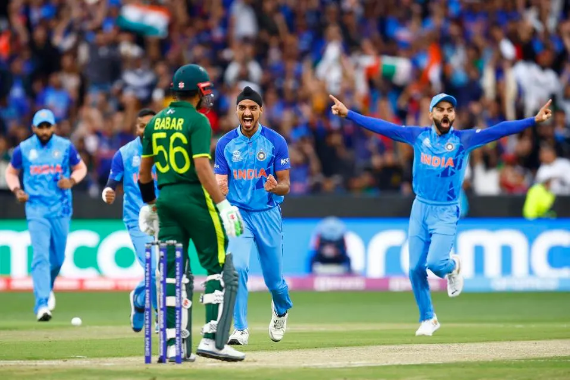

Home
Welcome to the home of T20's!

T20 is the shortest of the 3 formats of cricket consisting of 20 overs per inning and 2 innings (1 per team). It is played in colored clothing.
The T20 Cricket World Cup is an event held every 2 years.
Most Matches:
Rohit Sharma (IND) - 151
Paul Stirling (IRE) - 134
George Dockrell (IRE) - 128
Shoaib Malik (PAK) - 124
Mahmudullah (BAN) - 123
Tim Southee (NZ) - 123
Martin Guptill (NZ) - 122
Mohammad Hafeez (PAK) - 119
Mohammad Nabi (AFG) - 118
Virat Kohli (IND) - 117
Most Runs:
Virat Kohli (IND) - 4,037
Rohit Sharma (IND) - 3,974
Babar Azam (PAK) - 3,698
Martin Guptill (NZ) - 3,531
Paul Stirling (IRE) - 3,438
Aaron Finch (AUS) - 3,120
David Warner (AUS) - 3,099
Mohammad Rizwan (PAK) - 2,981
Jos Buttler (ENG) - 2,927
Kane Williamson (NZ) - 2,547
Most Wickets:
Tim Southee (NZ) - 157
Shakib al Hasan (BAN) - 140
Ish Sodhi (NZ) - 132
Rashid Khan (AFG) - 130
Mitchell Santner (NZ) - 111
Lasith Malinga (SL) - 107
Adil Rashid (ENG) - 107
Mustafizur Rahman (BAN) - 106
Shadab Khan (PAK) - 104
Wanindu Hasaranga (SL) - 102